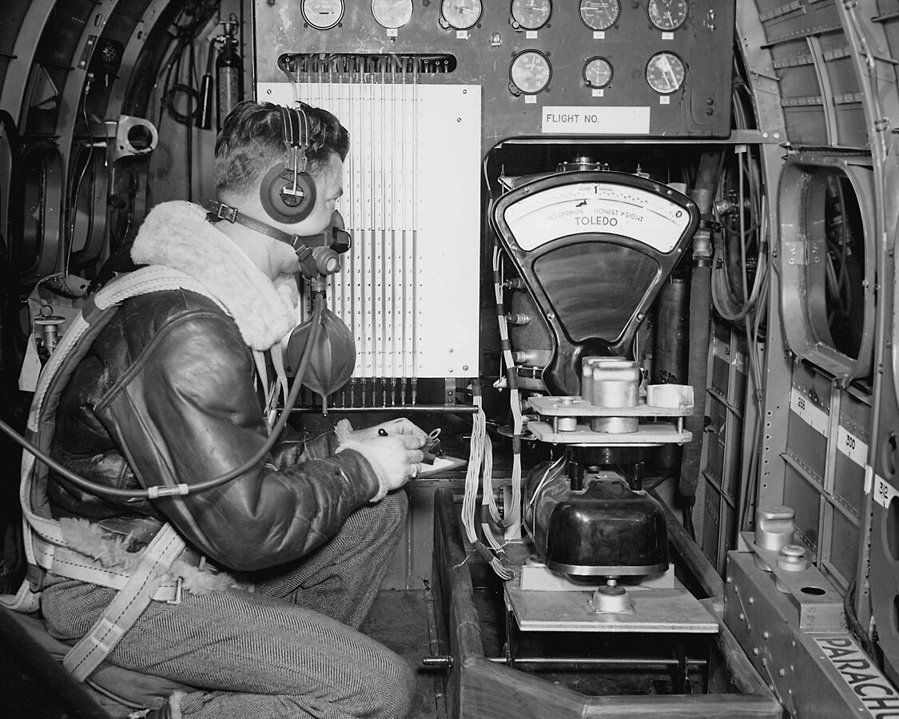

"I'm burning through the sky, yeah. Two hundred degrees, that's why they call me Mister Fahrenheit. I'm travelling at the speed of light."
from Queen, "Don't Stop Me Now".
 Standard weights and other measurements in use. 1
Summary
The unit system used herein is detailed.
Preferred units (primary SI units):
mass: kg
force: N
length: m
tk: temperature, K
time: seconds, s
p: air static pressure, Pa (N/m^2)
u: free-stream air speed, m/s
altitude: pressure altitude, m
energy: J or N-m
Icing specific, entrenched exceptions:
d_drop: water drop diameter, micrometer (1e-6 m)
lwc: liquid water content, g/m^3
The NACA publications systems of units
The units in the NACA publications vaguely follow "US Customary" units, although there are often exceptions:
mass: g, kg, lbm, slug
force: N, lbf
length: micron, inch, foot, mile, nautical mile
temperature: F, R
time: s, hour
air static pressure, lbf/in^2 (although commonly listed as a pressure altitude, ft.)
free-stream air speed: mph, knots (nmi/hour), ft/s
pressure altitude: ft
energy: BTU, lbf-ft
A note about mass and force:
To keep unit consistency in Newton's second law, a unit system constant "gc" is introduced.
Force = mass * acceleration / gc
In SI units gc = 1 kg-m/(N-s^2)
N = kg * m/s^2 / (kg-m/N-s^2) = N
As the value is 1, gc might not be explicitly be included in calculations in SI units, but it is always implicitly there.
In "US customary" units, gc = 32.174 lbm-ft/(lbf-s^2). It must be explicitly included in any calculation involving force, mass and acceleration.
The archaic mass unit "slug" was sometimes used (1 slug = 32.174 lbm) to help "alleviate" this, by making the gc value numerically 1, so if it is omitted it has no apparent effect.
gc = 1 slug-ft/lbf-s^2
However, I have seen errors of a factor of 32.174, regardless of whether slugs or lbm were used.
Sometimes a unique unit appears, such as this from NACA-TN-2799:
⍴ density, (lb)(s^2)/ft^4
This is slug / ft^3, in disguise.
See an excellent discussion about gc in "Fundamentals of Classical Thermodynamics", Van Wylen and Sonntag, Second Edition, John Wiley and Sons, 1973.
A note about thermal energy
In SI units, thermal energy and any other energy units are the same. For thermal energy, the Joule "J" is conventionally used. For mechanical energy, the unit N-m may be used, but it is, by definition, the same as a Joule.
In "US customary" units, thermal energy is typically in BTU (British Thermal Units).
To complicate matters, there is more than one BTU definition.
See https://en.wikipedia.org/wiki/British_thermal_unit.
Herein, the IT BTU is used.
1 BTU = 778.16926 lbf-ft
In the NACA publications, this is commonly rounded to 778.
Calculations in python
The file units_helpers.py has many unit conversion from the NACA units to and from the standard units above.
Using named conversions helps readability and maintainability, by avoiding uncertainty of why certain values appear.
u = v / 2.2369 # Why this value?
u = units_helpers.mph_to_ms(v) # Clearer
It is recommended to convert to standard units as soon as a value is input. If output in non-standard units is desired, the conversion should happen just before output. This keeps internal calculations in the preferred unit system.
 From WADC TR 54-313.
From WADC TR 54-313.
Notes
-
From commons.wikimedia.org. The description reads: "Recording high altitude flight data in a flying laboratory at the Aircraft Engine Research Laboratory of the National Advisory Committee for Aeronautics, Cleveland, Ohio, now known as the John H. Glenn Research Center at Lewis Field. The aircraft is a modified B-29 bomber manufactured by Boeing, and backbone of the World War II effort. It was used to determine what conditions cause ice to form on wings and aircraft surfaces." The date is given as May 11, 1944. While the text is not explicit, I speculate that this illustrates ice samples from a rotating cylinder instrument being weighed (I don't know what else would be weighed in flight). I also speculate that the photo was staged on the ground, as the manometers (glass tubes partially filled with fluid) are all reading zero. Also, note a "PARACHUTE" is available, in case something goes wrong. I have not found this photo in a NACA publication. ↩
{kind=link}